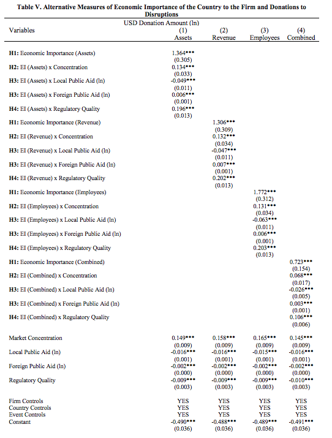
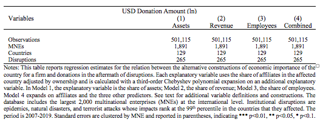

Alternative Predictor Variables
In robustness models, we use alternative measures of economic importance based on revenues, total assets, and employees. We do not use them as main explanatory variables as, arguably, it may reduce construct validity. For instance, revenue can overrepresent some industries and some types of affiliates, such as sale subsidiaries and only accounts for the demand side of the market and it does not capture the relevance of the country affiliate as a supplier of inputs for the firm.
Moreover, Orbis has substantial missing data for these variables. Addressing missing data with listwise deletion or mean substitution would foster the risk of obtaining biased estimates, increasing Type II errors, and underestimating correlations and coefficient weights. To address this, we start by analyzing missingness patterns and find no systematic divergence on the completely observed variables between those with missing data and those with available data. In other words, the hypothesis that data are missing completely at random cannot be rejected. Then, we use two methods to impute data:
- For firm-level data, we expand using Chebyshev polynomials because they can arguably approximate most functional forms (Kolsarici and Vakratsas 2015). We opted for a third-order polynomial based on the Bayesian information criterion after considering expansions up to the 20th degree.
- For country-level data, we apply multiple-input bootstrapping algorithm for time-series-cross-sectional data as explained by Blackwell et al. (2017). This form of imputation accounts for smooth time trends, changes across cross-sectional variables, and time and space correlations and it susceptible to integrate scant knowledge to specific cells when available. A review of how this method can produce more accurate imputation particularly for macro level data than traditional procedures can be found in Honaker and King (2010).  